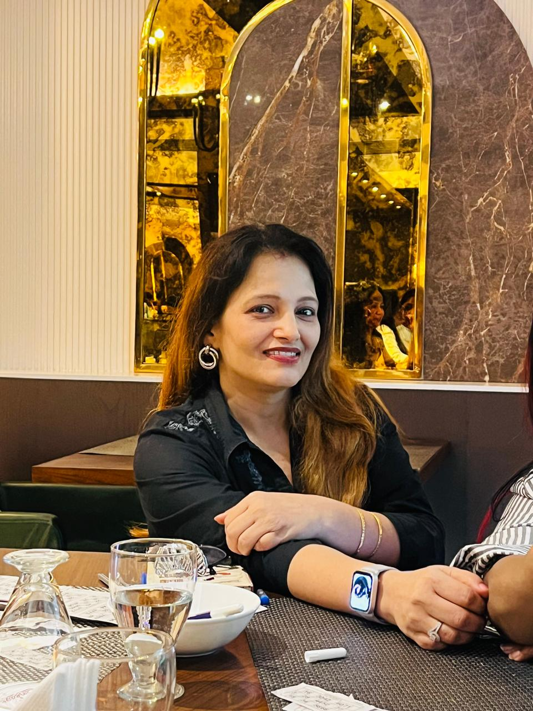

Build relationships
Encourage genuine connections based on trust, respect and open communication.
Our story
Growth with Grace Parivar brings people from different professions and backgrounds into the same room to exchange ideas, build trust and contribute to the community.
Who we are
Growth with Grace Parivar is a community of entrepreneurs, professionals, business owners and individuals who value connection as much as achievement.
Our gatherings are designed for real conversation: members can introduce their work, exchange experience, offer guidance and discover ways to collaborate.
Professional networking is only part of the picture. We also care about kindness, responsibility and service, because a useful community should extend beyond the room where people meet.


Our founder
Mrs. Hema Khatri founded Growth with Grace Parivar with the aim of creating a community grounded in trust, respect and a willingness to support one another.
She completed her graduation in Varanasi, continued her studies at the University of Allahabad and later earned her B.Ed in Lucknow. She moved to Lucknow, married Mr. Roshan Khatri in 2000, and they have two sons.
In 2008, she founded Little Pearls International School, a preschool focused on early childhood education and the needs of local families.
Her work in social service also includes Madhayam Samajik Sanstha, an NGO founded in 2005 that has carried out community initiatives, awareness campaigns and charitable projects supporting underserved communities.
In 2017, she founded Epic Events, an event management company focused on social, cultural and community events.
She is also a certified parent counsellor, with an ongoing interest in child development, parenting, education and community welfare.
Our vision
We want to create a place where people from different backgrounds can build relationships that remain useful long after a gathering ends.
That means making space for professional development, personal connection and responsible participation in the wider community.
Our mission
Encourage genuine connections based on trust, respect and open communication.
Create opportunities for members to exchange practical ideas, experience and perspective.
Use skills, experience and resources to support thoughtful community service.
Our values
Be honest, transparent and accountable in the relationships we build.
Make room for different experiences, professions and points of view.
Look for ways to share knowledge, make introductions and solve problems together.
Turn community spirit into practical action when there is an opportunity to help.
Stay connected
Explore the gallery, see the next event or get in touch with the team.